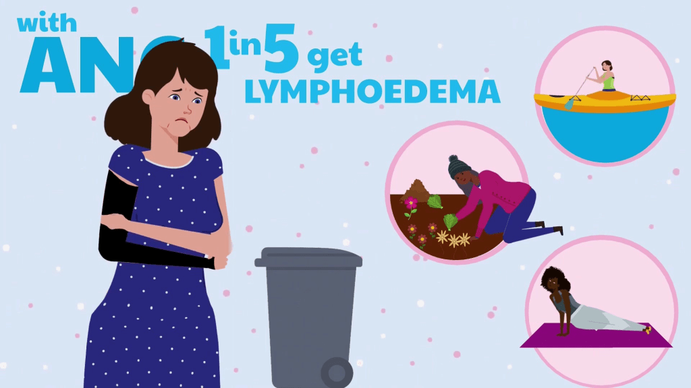
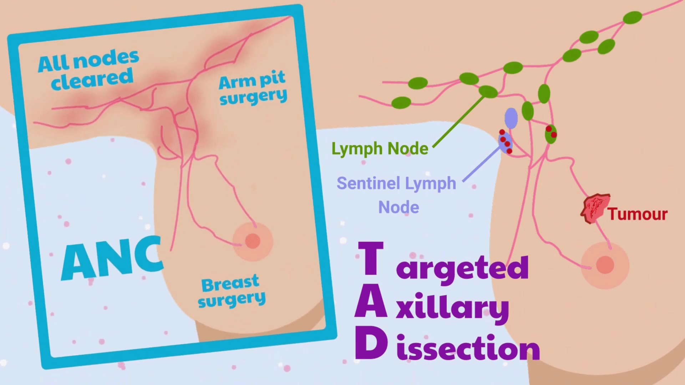
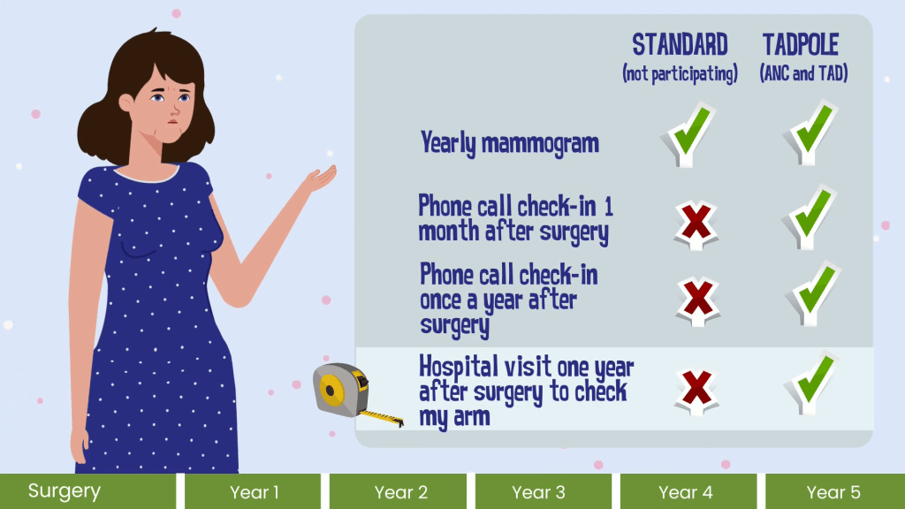

Additional information about the TADPOLE Study
This page gives more detailed information about why the study is being done, what will happen if you take part, and how your data will be used. It reflects the content of the printed supplementary information you may receive in clinic.
PART A: Why is this study being done and what will happen if you take part?
What is the purpose of the study?
Breast cancer affects around 56,000 new patients each year in the UK. For around one in five patients, the cancer will have spread to the armpit (axillary) lymph nodes at the time of diagnosis.
The standard treatment for patients whose cancer has spread to their armpit is to remove all these lymph nodes, using a surgical procedure called axillary node clearance (ANC). However, one in three patients can experience complications after this operation. These may include permanent swelling of the arm (lymphoedema), long term pain and problems with how their shoulder might function. These complications can have an impact on patients’ quality of life and are costly for the NHS.
Removal of all the lymph nodes in the armpit was traditionally believed to give patients the best chance of surviving their breast cancer, but there is no evidence to show that this is needed if the spread of cancer is limited to just one or two axillary lymph nodes.
More targeted surgery to the armpit, in which only the lymph nodes containing cancer and the first draining (sentinel) lymph nodes are removed, is called targeted axillary dissection (TAD). This procedure may be just as safe as standard treatment and should reduce the risk of patients having potentially life-changing, long-term complications from lymphoedema. Currently, there is no good evidence to determine which lymph node procedure is best for patients.
This study aims to find out if more targeted armpit surgery (TAD) reduces the risk of arm swelling (lymphoedema) without increasing the risk of the cancer returning. We will also look at the costs to the NHS.

Why have I been invited?
You have been invited to take part in this study because your surgeon is working with the research team to understand more about which surgical lymph node procedure is best.
Your healthcare team will talk to you before your operation to discuss the study further and find out if you are interested in taking part.
Do I have to take part?
No. It is your choice whether or not to take part in the TADPOLE study. If you decide not to take part, you will receive the standard surgical procedure to your armpit that is used at your local hospital, and the treatment and care you receive from your doctors and other healthcare professionals will not be affected in any way. If you do decide to take part, you are also free to leave the study at any time you wish, without giving a reason.
What is involved in the study?
If you decide to take part in the TADPOLE study, you will be randomly put into one of two groups. One group will receive targeted axillary dissection (TAD) the other will receive axillary node clearance (ANC). As we do not know which is best for patients, the type of surgery you will have will be decided through a process called randomisation. Randomisation is used because it creates groups of patients that have similar characteristics, except for the type of operation they have on their armpit. This will enable the surgical techniques to be compared fairly so at the end of the study we will understand which surgical technique is best. In this study the TAD group will be twice as large as the ANC group. This is so we can find out more quickly which surgical procedure is best. Neither you, the surgeons, nor the research team can choose which group you are placed in, as this could result in the groups becoming unequal and make the findings unreliable. It is important that you only agree to take part if you are willing to accept either of the two surgical procedures.
We will invite some patients to have an optional discussion (research ‘interview’) about their views on the study and their experiences since starting the study. This will be either face-to-face (in-person or video-conference) or over the telephone, and will be audio-recorded with your consent. If you choose to have the interview by video-conference, you will consent to video-recordings. However, video-recordings will be deleted and only the audio-recording will be used. You can decide not to take part in this interview but still take part in TADPOLE. We are also interested in hearing from those who are not interested in taking part in TADPOLE.

If I decide to take part, what happens next?
Initial discussion about the TADPOLE study
Following the appointment with your surgeon about your diagnosis, a member of the local research team will contact you to discuss the study in more detail. They will answer any questions you may have and, if you want to take part, arrange your first study visit at your local hospital. If you are later found not to be eligible for the study, then you will receive the usual care provided.
Consent
If you decide you would like to take part in the study you will be asked to provide your written agreement to do so, which we call ‘informed consent’. This will happen in person during a visit to the hospital where your surgery will take place, or by signing a form online at home before your visit.
First Study Visit
You will be asked to complete some assessments during your first study visit. When you visit the hospital where your surgery will take place, the research nurse will collect information such as your medical history, height, weight and your arm measurements. You will also complete some questionnaires. These can be completed on paper or online, depending on your preference.
Randomisation
Once all of the required information has been collected by the research nurse, you will be randomised to have either a TAD operation or ANC operation. The surgery you will have will be randomly allocated to you by an online computerised system.
Before surgery
If you have been randomised to have the TAD operation, you will have a further axillary (armpit) ultrasound scan to mark the lymph nodes for removal. This will require an additional visit to the hospital.
Surgery
You will have surgery under general anaesthetic to remove the breast cancer (as agreed with your surgical team) at the same time as your allocated axillary (armpit) procedure (TAD or ANC). You will receive standard post-operative care and will be discharged from hospital as per local practice.
Participants allocated to TAD will have a sentinel node biopsy (removal of first draining (sentinel) nodes) as part of their procedure. In some hospitals, an injection of a radioactive isotope (tracer) is used to help identify the sentinel nodes prior to the TAD procedure.
1 month after surgery
You will receive a phone call at 1 month after your last armpit surgery to collect information about your pain and other health-related information .
1-Year Study Visit
You will have a face-to-face visit at your local hospital 1-year after your last armpit surgery to complete some clinical assessments, such as arm measurements, and to complete questionnaires about your quality of life. We will try to arrange this visit so that it happens at the same time as your mammogram at 1 year.
Further follow-up contacts
After your 1-year visit, you will be followed up by the research team at 2, 3, 4 and 5 years after your surgery. These follow-ups will be completed via a telephone call. During these calls, we will collect information from you about your health status.
Questionnaires
We will ask you to complete the study questionnaires at your first study visit, and at 1, 2 and 5 years post-surgery. You can complete the questionnaires by post or online when you do not have a study visit. The questionnaires will take approximately 15-30 minutes to complete, depending on how many questions are relevant to you.
Mammogram
You will be invited to attend an annual mammogram on the anniversary of your surgery for the next 5 years as per standard of care.
Mammograms are part of your routine care. If you take part in this study you will not undergo any additional mammograms.
Tissue sample collection
Tissue from your tumour and lymph nodes will be collected by your hospital and tested as part of your routine care. With your permission, we would like some of this tissue for future ethically approved research to understand more about breast cancer. This will not affect your care in any way.
Data Collection
If you agree to take part in the TADPOLE study, we will collect relevant information about you from your medical records, and through direct contact with you during the course of the study.
We will inform your GP of your participation in the study and let them know which group you have been allocated to. We may also contact them to ask them to provide health related information about you that is relevant to the study.
Will I still be able to access other cancer treatments?
Yes. Your pathology results will be discussed at your hospital’s multidisciplinary team (MDT) meeting as per usual care.
All study participants will have access to breast cancer treatments as per the MDT recommendations. This may include chemotherapy, radiotherapy to the breast/chest, hormone therapy, and cancer cell growth inhibitor drugs.
If you receive TAD surgery, further treatment (e.g. armpit ultrasound scan and another TAD or ANC surgery) may be necessary if any of the lymph nodes containing cancer were not removed during your original operation. This will depend on MDT guidance and your preference.
ANC surgery or axillary (armpit) radiotherapy may be needed if you are found to have 4 or more lymph nodes containing cancer during your TAD surgery. This will depend on MDT guidance and your preference.

What are the possible benefits and risks of taking part?
We cannot promise that the study will benefit you but the information that you provide will help to improve the future care of patients with breast cancer that has spread to their axillary lymph nodes.
Some people enjoy being part of a research study because of the close contact with research staff and their opportunity to share their opinions and experiences of their condition and treatments. also explains small risks from any additional imaging using radiation.
If you decide to take part, your surgeon will explain the risks of having breast cancer surgery (in general) and the risks specific to the TAD and ANC procedures. If you are randomised to receive ANC, this is the same procedure as what you would receive as standard care and so the risk is the same as if you were not in the study. If you are randomised to receive TAD, you will need to attend an additional ultrasound procedure before your surgery, to identify the affected lymph nodes before removal. With this additional procedure, and with the TAD procedure itself, there is a small risk of complications, such as:
- Bleeding
- Haematoma (a small pool of blood formed under the skin)
- Wound infection
- Seroma (a small pool of clear fluid formed under the skin)
- Allergic reaction to sentinel node agents (blue dye reactions)
The surgeon will explain how commonly these occur to help you decide if you would like to take part.
You will be involved in the study for 5 years, which will include up to 2 additional hospital visits and annual telephone contact with the local research team. However, you may feel reassured by the additional contact with the research team.
You will also complete questionnaires as part of the study, which may cause you to think more about your condition and, therefore, may cause emotional distress. However, you may also find that completing questionnaires increases your awareness of how you are feeling about your condition and this may provide comfort.
If you take part in this study you will have mammograms and may have a sentinel node procedure involving an administration of radioactive material.
Some of these procedures will be extra to those that you would have if you did not take part. These procedures use ionising radiation to form images of your body and provide your doctor with other clinical information.
Ionising radiation may cause cancer many years or decades after the exposure. The chances of this happening to you as a consequence of taking part in this study are about 0.06 %.
What happens after the study is over?
After completing your final questionnaire at 5 years after surgery, you will continue to receive the standard care provided by the NHS. We may contact you again to a) check on your long-term health, for example by sending you other questionnaires to add information to what we already know about you, or by checking NHS medical records; and b) to ask you if you would like to take part in other relevant studies. This is completely optional. You will not have to reply to any questionnaires or take part in other studies unless you want to at that time.
We will ask for your permission to collect some information about you from some healthcare databases, to continue to check on your long-term health since surgery at 10 or even 20 years after your surgery. This is only if further funding is secured by the research team. This is completely optional.
Further details about possible healthcare databases we may use are below:
NHS England/ Department of Health and Social Care (DHSC) collect Hospital Episode Statistics (HES), Northern Ireland Department of Health (NIDoH) collect Northern Ireland Hospital Statistics Dataset (NIHSD), NHS Scotland collect Scottish Morbidity Records (SMR) and NHS Wales collect Patient Episode Database for Wales held on SAIL (Secure Anonymised Information Linkage Databank). All these collect information from all hospitals on behalf of the UK Government. This information is routinely collected by the NHS whenever you have hospital treatment. We may be interested in information about any hospital stays you may have after joining the study for at least ten years after your surgery.
We may also obtain information relating to your breast surgery (including any further operations you may have) and mortality data from the Office of National Statistics (ONS) to fully understand what happens to all TADPOLE patients.
To obtain the information from NHS England, Northern Ireland Department of Health, NHS Scotland, NHS Wales and ONS databases, we need your permission to share your full name, sex, NHS number, postcode and date of birth with them. They will use this information to link to records they hold about you.
What about expenses and travel?
We are unable to offer any travel or additional expenses as part of the study. Where possible, your study hospital visits will be arranged to take place at the same time as your standard care hospital visits.
If you choose to take part in a qualitative interview you will be offered £10 as a token of appreciation for your time.
PART B: Further general information and data protection
How will we use information about you?
What are your choices about how your information is used?
We will need to use information from you and/or from your medical records for this research project. This information will include your:
- Initials
- NHS number
- Name
- Gender
- Ethnicity
- Date of birth
- Age
- Primary language
- Education level
- Employment status
- Contact details (for example: address, postcode, telephone number, email address)
People will use this information to do the research or to check your records to make sure that the research is being done properly. We use this data to understand if our research has been inclusive and if, overall, study participants represent the general population that this research and treatment will affect. This will tell us how applicable our results will be to the wider population.
People who do not need to know who you are will not be able to see your name or contact details. Your data will have a code number instead.
North Bristol NHS Trust is the sponsor for this study based in the United Kingdom. North Bristol NHS Trust and the Bristol Trials Centre (BTC, University of Bristol) will act as joint data controllers for this study. This means that we are responsible for looking after your information. We will share your information related to this research with the following types of organisations:
If you choose to receive text message reminders to complete the questionnaires, we will share your mobile telephone number with a University of Bristol approved third party provider. Your phone number will be kept confidential by the third party provider and will not be used for any other purposes. Your hospital will be required to share anonymous clinical data (scan images and radiotherapy treatment information) about any radiotherapy treatments you may have with the Radiotherapy Trials Quality Assurance (RTTQA) Group (https://rttrialsqa.org.uk/). This group is an independent network of clinical and health professional staff, based across a number of UK NHS sites. Their role is to check that radiotherapy provided by your hospital meets the standards expected for this study. No personal information (name, date of birth, gender etc) is provided to them, they will not know who you are. If you require a translator, we may need to share your name and contact number with a University of Bristol approved third party provider for the purpose of the phone call only. We will keep all information about you safe and secure by:
Following ethical and legal practice and all information about you will be handled in confidence. All information collected for the study at any time will be stored using a ‘study identification number’ for confidentiality and will be kept secure using passwords on a University of Bristol server. Your data will be stored and used in compliance with the relevant, current data protection laws; Data Protection Act 2018 and General Data Protection Regulation (GDPR). How will we use information about you after the study ends? Once we have finished the study, we will keep some of the data so we can check the results. We will write our reports in a way that no-one can work out that you took part in the study. We will keep personal information (e.g. name, date of birth, contact details) about you for a maximum of 5 years after the study has finished. This data will then be fully anonymised and securely archived or destroyed along with other study documents and information.
Should we receive additional funding for longer follow-up (10 and 20 years), we will keep your personal data during this time. After this follow-up is complete, your personal data will be kept for a maximum of 5 years. This data will then be fully anonymised and securely archived or destroyed along with other study documents.
We will keep anonymous study data indefinitely. Other researchers may wish to access anonymised data from this study in the future. If you take part in the TADPOLE study, anonymous data collected in this study will be made ‘open access on application’, which means it will be available to other researchers who apply to use it and have the appropriate approval. This will not include names, addresses or dates of birth, and it will not be possible to identify you.
In the event that we cannot contact you, we will collect information from NHS databases about whether your disease has come back, or whether you have died. To safeguard your rights, we will use the minimum personally identifiable information possible..
Where can you find out more about how your information is used?
The printed leaflet lists websites and contact details at North Bristol NHS Trust and the University of Bristol if you have questions about data use and information governance.
What will happen to the results of the study?
Results will be published in medical journals, presented at conferences and shared in plain language summaries. You will not be identified in any report.
Who is organising and sponsoring the study?
TADPOLE is funded by NIHR, led by Professor Shelley Potter and supported by a network of doctors and researchers across the UK. North Bristol NHS Trust sponsors the study and the Bristol Trials Centre manages it.
Who has reviewed the study?
The study has been reviewed and approved by the Health Research Authority and an NHS Research Ethics Committee.
What if I have any concerns?
If you have any concerns regarding your care as a patient, please discuss this with your surgeon or nurse. If you become unable or unwilling to continue taking part in the TADPOLE study, we will withdraw you but continue to use the data already collected. If you do not want us to use your data, please let us know. Your medical treatment will continue as usual with your hospital team and GP.
It is unlikely that participating in this study will affect insurance cover (e.g. travel insurance, private medical insurance, life insurance, income protection or critical illness cover) but you should consider this before participating and seek advice if necessary.
In the unlikely event that something does go wrong, and you are harmed during the research study there are no special compensation arrangements. If you are harmed and this is due to someone’s negligence, then you may have grounds for a legal action for compensation against the responsible organisation, or the employer of the responsible individual, but you may have to pay your legal costs. The normal National Health Service complaints mechanisms will still be available to you.
If you have any questions about the study, or any aspect of your treatment or health whilst on the study, please ask to speak to your TADPOLE study research nurse or surgeon.
Alternatively, you can contact us.
The Patient Advice and Liaison Service (PALS) /Advice & Complaints Team (ACT) should be contacted for any complaints.
TADPOLE Supplementary Participant Information | V1.0 | 17April25